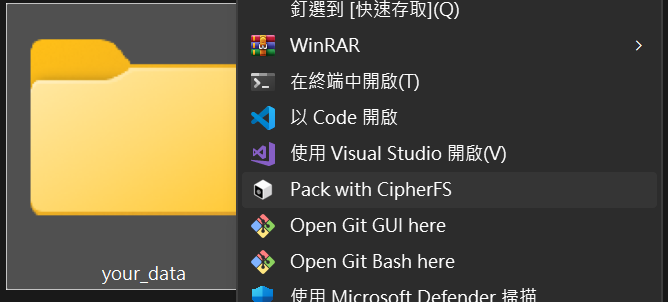

Windows Installer 下載量
—此版本下載次數
—歷代累計下載次數
Windows Installer 包含
- CipherFS CLI 與 Windows Shell
- Explorer 右鍵選單與
.cfs檔案關聯 - 需要時安裝 WinFsp
- 升級、修復與解除安裝
官方 GitHub Releases
Windows x64 與 Linux x64。檔案直接來自官方 GitHub Releases。
Windows Installer 下載量
.cfs 檔案關聯安裝前需知
Windows Setup 會安裝到 Program Files，整合檔案總管，並在需要時安裝 WinFsp。
目前 Windows 版本未做 Authenticode 程式碼簽章，安裝時可能顯示「Unknown publisher」。
這是實驗性軟體。先用非關鍵檔案試用，保留原始檔案與獨立備份。

其他下載與驗證
自行管理安裝，或核對發布檔案的完整性。